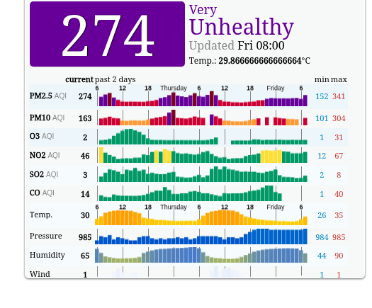

AQICN: check your city's live air quality before you step out
Before your morning walk or your child's outdoor play, one minute on aqicn.org tells you what the air is doing at the station nearest you. We checked Delhi on a "Very Unhealthy" morning; here is what the free site shows, and one scale difference Indian users should know.
Quick facts
- Free, no-account site for live air quality: search for a city and see its current AQI, pollutant-by-pollutant AQI rows and a 7-day forecast.
- Run by the World Air Quality Index project; its world map shows real-time data from more than 10,000 stations across more than 80 countries, per the project.
- India data is attributed to the CPCB (Central Pollution Control Board) and IMD, shown at station level.
- In our test, Delhi's page showed AQI 274 ("Very Unhealthy") at one station; the Delhi stations we saw ranged from 175 to 274 in readings stamped 8 AM.
- Numbers use the US EPA AQI scale, which differs from India's own CPCB national AQI bands.
What it does
aqicn.org, run by the World Air Quality Index project, shows the current Air Quality Index for cities and individual monitoring stations around the world. Search for a city (or let it locate the nearest one) and you get a station-level reading with the AQI number and its health band, pollutant-by-pollutant AQI rows (PM2.5, PM10, ozone, NO2, SO2, CO) with 48-hour history graphs, weather readings, a map of nearby stations with their live numbers, and a 7-day air quality forecast with hourly detail. The project says its world map covers more than 10,000 stations in more than 80 countries. No account is needed for any of this, and it works in a phone browser.
Our test: Delhi on a "Very Unhealthy" morning

We opened the Delhi city page at about 9 AM on 23 October 2026. The ITI Shahdra station showed AQI 274, in the "Very Unhealthy" band, in a reading stamped 8 AM, about an hour old. Below the headline number, the site lists per-pollutant AQI sub-indices, not raw concentrations: PM2.5 AQI 274, PM10 AQI 163, ozone AQI 2, NO2 AQI 46, SO2 AQI 3 and CO AQI 14, each with a 48-hour history graph. The city map showed the other Delhi stations visible at that moment ranging from 175 to 274, a reminder that readings differ from station to station. A 7-day hourly forecast for PM2.5, wind and temperature sat below. The Delhi page attributes its data to the CPCB (India's Central Pollution Control Board) and the IMD. No sign-up or payment appeared anywhere.
How to use it
- Open aqicn.org and search for a city, or use "locate the nearest city".
- Read the headline AQI and its band, then the per-pollutant AQI rows below it.
- Check the timestamp on the reading and use the station map to find the station closest to your area rather than relying on a city average.
- Check the 7-day forecast when planning outdoor activity, morning walks, sports or travel, keeping in mind it is a model estimate.
Limits and frictions
- The scale is the US EPA AQI standard (the site states the 2016 version). India's CPCB publishes its own national AQI with different bands, so the same station can show different numbers on aqicn.org and on Indian official channels; the two scales are not directly comparable.
- Readings are near-real-time, not instant: the station reading in our test was stamped about an hour before we checked.
- One station is not the whole city; the Delhi stations we saw ranged from 175 to 274 at the same time.
- The forecast is a model estimate, not a measurement.
- The site shows advertising, including banner overlays on the map in our test.
Privacy
Reading any page needs no account and no personal details. The site offers an optional browser-location prompt to find your nearest city; declining it simply keeps the page on the city you opened. We did not audit the site's data practices.
Why it matters for Indian users
North India's pollution season is here: on the morning of 23 October, the Delhi stations we checked showed readings of 175 to 274 on the US EPA scale, stamped 8 AM, in the "Unhealthy" to "Very Unhealthy" bands. For anyone following air quality through the season, aqicn.org gives station-level local data rather than a national headline. To read it well, check three things: the timestamp on the reading (ours was about an hour old), the station it comes from (pick the one nearest you on the map), and the scale (US EPA here, not India's CPCB national AQI). A single reading or a forecast is general information, not medical advice.
Sources checked 23 October 2026: the aqicn.org Delhi city page and its data-source attribution, the project's WAQI.info world map page, and its AQI scale page, linked below.